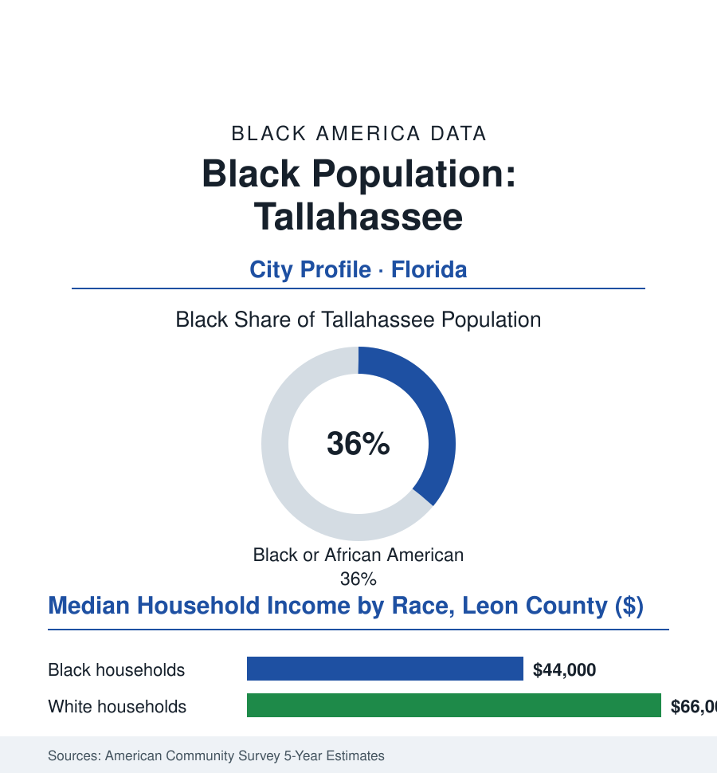

Black Cities
Black Tallahassee: 71,000 People in Florida's HBCU Capital
Tallahassee runs on government and two universities — one of them Florida A&M, among the largest HBCUs in America — in a panhandle city with deep Black roots.

Tallahassee's Black community numbers roughly 71,000 people — about 36% of the city's 197,000 residents, and a larger share of surrounding Leon County's civic life — in Florida's capital, set in the red hills of the panhandle a world away from Miami's neon. Its defining institution is a university on the highest of the city's seven hills: Florida A&M, whose rattlers and marching band make Tallahassee, per capita, one of the most HBCU-saturated cities in this atlas. This article reads the capital's numbers.
A Capital Built on Two Hills
Tallahassee was planted as a territorial capital in cotton country, and its Black history runs from the plantation belt's demography (the surrounding counties among Florida's Blackest, the Gadsden County line the state's own Black Belt) through the founding of the college that became FAMU in 1887 — the institution that made the city a Black educational capital a century before the phrase existed: its law school (closed in the integration era's consolidations, its alumni having integrated Florida's bar), its pharmacy and nursing schools feeding the health workforce file, its Marching '101' the most famous band in the HBCU world, its homecoming an economy in itself in the tourism data. Florida State, on the neighboring hill, desegregated a generation later, and the two universities' twin gravity — the students, the faculties, the cultural machinery — gives Tallahassee a Black professional stratum out of all proportion to its size (the state government's payroll beneath it, the capital's agencies and courts the employment file's public-sector rows at concentration: the Black state worker, the legislative staff, the agency counsel — the civil-service ladder as the city's middle-class escalator for three generations, with the political representation to match in the county commission and the legislature's Black caucus, long anchored from this city). The Frenchtown neighborhood — the city's historic Black district, its shotgun blocks and its music (the jazz and blues clubs of the chitlin' circuit's Florida leg) — stands in the record with its preservation fights, the heritage trail and the museum keeping its archive blocks from the capital-complex expansion that consumed its edges. It is also, the demographers note, one of the South's most educated Black populations per capita — the two hills' gravity measurable in the attainment tables of the surrounding counties' plainest rows.
The Capital's Two Economies
The current ledgers show a government-and-education town's characteristic split, sharpened by its geography: the professional tier's stability (the state's payroll among the most recession-proof in the employment data, the universities' endowment-era building, the Black median household income in the mid-forty-thousands — respectable for the region — carried by the public-sector concentration) against the south side's other economy (the service and student-adjacent wages, the poverty rows of the neighborhoods between the two hills and the airport, the food and pharmacy deserts of the health file in the capital city of the third-largest state — a datum its health rankings keep publishing to its embarrassment). The panhandle's weather file sits over the city as it sits over Albany (the hurricane tracks' inland reach — Michael's lesson in the damage data — the tree canopy that is the city's beauty and its power grid's nemesis), and the growth data sketch the modern tension: the suburbs swelling in Wakulla and east Leon while the city's own tracts argue over student housing's conversion of Black neighborhoods block by block — the university town's gentrification in its southern accent. The forward rows carry FAMU's era as the headline: its research designations rising, its state funding fights a biennial legislative drama the whole HBCU world watches (the performance-funding metrics' disparate machinery, the nine-figure appropriation corrections of the recent sessions), its enrollment and endowment the leading indicators of whether Florida's capital remains, in the next census, the HBCU capital its Black population built.
Reading Tallahassee's Numbers
Seventy-one thousand Black residents, a state payroll, two hills, and one irreplaceable university: Tallahassee is the cities file's proof that a Black civic world can be anchored by a school and a capitol as surely as by a factory or a port. The census counts the capital. The band, arriving down the hill at homecoming, provides the count's soundtrack — the most famous hundred-and-one-piece footnote in the data.
More in Black Cities
Black Atlanta: Population, Distribution, and Growth of a Black Metropolis
Metro Atlanta holds more than two million Black residents — roughly one in three, second only to New York. The suburban distribution, migration history, and composition of Black Atlanta in the census data.
Black New York: The Largest Black Population in America
The New York metropolitan area holds about 3.4 million Black residents — more than any metro in the nation — and the city itself about two million. The census profile.
Black Washington: The District and the Metro
The Washington metro holds about 1.6 million Black residents, and the District itself — long a majority-Black city — now records a Black share near 41 percent. The census profile.
Source: U.S. Census Bureau, 2020 Census and American Community Survey 5-year estimates; City of Tallahassee and Leon County; Florida A&M University; Florida State University data.